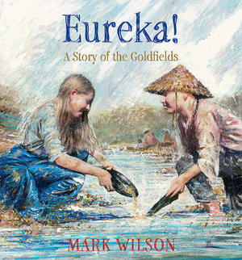
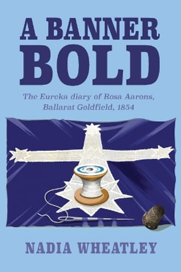
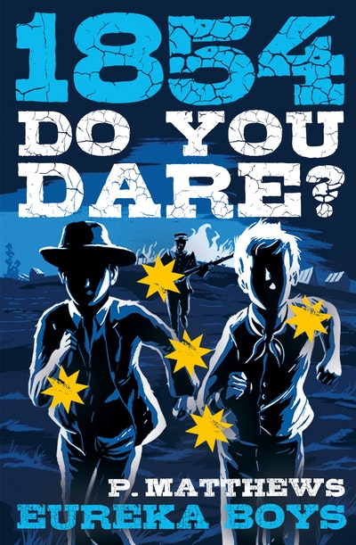

Gunfire at Dawn · The Eureka Stockade, Ballarat, 1854
Case no. EUR-1854-12-03 (made up for this book)
Confidential For the Court
Open the envelope. Start with Nell’s Diary. Then read the brief as the Court, and open the student case file to test every word of it.
History Case File · Who Fired First?
Nell’s Diary
Gunfire at Dawn
The Eureka Stockade, Ballarat, 1854
Exhibit N: diary of Nell Byrne, Ballarat, 1854
St Alipius Roman Catholic Denominational School, Ballarat
The chapel school, Jan. 1854
Eugene von Guérard, Catholic Chapel on the Gravel Pit Line, Ballarat, January 1854. State Library of Victoria, H12532.
Nell Byrne
St Alipius Roman Catholic Denominational School, Ballarat
Eureka lead, Ballarat
1854
St Alipius School, Ballarat
Late November, 1854
For Mrs Hayes.
The shout came racing down the gully. Traps!
I dropped my bucket and the water went all over my boots. Men popped up out of their holes like rabbits all along the Eureka lead. Some ran for their tents, some for the bush. Traps means police.
Five riders came trotting between the tents. A trooper shouted Licence!
Did you see this yourself, or who told you?
Every digger at Ballarat has to pay for a lisence, even if you find nothing but mud. Most of us have found nothing but mud — Irish families like us, the English, the Germans, and the Chinese diggers along the creek, who sailed just as far for gold as anyone. Without a licence a man can be fined, or marched to the lock-up at the Government Camp.
Da was still down the shaft. I ran to the hole. Da! The traps are here! I’ve got it, Nell, his voice came up. It’s in my coat.
The coat was hanging on the windlass post. The trooper asked, Is your father down there, girl? I held the paper up with both hands. He squinted, grunted, and rode on.
My legs went all wobbly. Da climbed out, as brown as a potato, and hugged me hard. That’s the last time, he said. The very last time.
I don’t know what he meant. Not yet.
St Alipius School, Ballarat
Wednesday, 29 November 1854
For Mrs Hayes. We had to write what we saw.
Today I found out.
Thousands of people gathered on Bakery Hill. I never saw so many in one place. Irish diggers like Da, English and Scottish and Welsh, Germans and Italians, and Americans in wide hats.
How do you know?
The diggers have a group called the Ballarat Reform League. They want fair laws. Most of all they want a say. The diggers cannot vote for the people who make the rules about our licences.
You describe the stitching very closely, Nell. Who do you think sewed it?
Then a flag rose up a tall pole, huge and deep blue, with a white cross. I stood close enough to see the stitching, quite fine.
Count them again. Were they all the same size?
It had five white stars, just like the Southern Cross at night. I never saw anything so beatiful.
Somebody lit a bonfire. One by one, men threw their licences into the flames. Da held his paper for a long moment. Then he threw it in.
I watched it curl and burn. Now Da has no licence at all. And the next time the traps come, there will be nothing to show them.
Our tent, Eureka
Thursday, 30 November. Morning.
The traps came this morning. This time there were police and soldiers too. The diggers did not run. They shouted. Some threw stones. I crouched behind a barrel and covered my ears.
This afternoon the crowd is gathering on Bakery Hill again. But it feels different now. Angrier. Louder.
St Alipius School, Ballarat
Thursday, later.
For Mrs Hayes.
An Irish digger with a rifle climbed onto a tree stump. His name is Peter Lalor.
Some of us have people we love on that hill.
He told the crowd it was time to swear an oath. Anyone who did not mean to take it, he said, should leave. Hundreds of armed diggers gathered around the flagpole. Lalor knelt, took off his hat, and pointed to the blue flag. They swore to stand by each other and fight to defend their rights and liberties. Hundreds of right hands stretched out towards the flag, and a great Amen! rolled across the hill.
Da was one of them.
Mrs Hayes put her hand on my shoulder. Stay close to your mother, Nell, she said softly, her eyes on the kneeling men. Whatever happens.
I nodded. But I don’t understand. Not yet.
What time was it?
The men were sorted into groups with guns, and groups with pikes — long poles with sharp iron points. My stomach went cold.
They are not just protesting any more. They are getting ready for a fight.
St Alipius School, Ballarat
Friday, 1 December
For Mrs Hayes.
A wall is going up on the Eureka lead.
What couldn’t you see?
The diggers are building it from wooden slabs and carts they can drag there. They call it a stockaid. It is not very tall or strong, but the blue flag flies from a pole in the middle, and the men inside it look fierce and proud.
Watch where the women go and what they carry.
Our tent is close enough to hear the hammering all day.
Keep this book safe. Someone may need it one day.
I keep thinking about what Mrs Hayes said. Whatever happens.
Our tent, Eureka
Saturday, 2 December
Hot today. Ma sent me to borrow an onion.
I passed the tent of Mr Carboni, an Italian digger who speaks so many languages he can talk to almost anyone. He was frying steak, and his mate was peeling an onion. He kept looking down at the stockade and scribbling in a little book.
This afternoon the stockade was almost empty. Lots of the men had gone back to their tents or their claims, or wandered off.
A notice came from the Government Camp. No lights after eight o’clock. No guns to be fired. Anyone who disobeys might be fired at.
Tomorrow’s Sunday, said Da, blowing out the candle. Nobody fights on a Sunday.
I am lying awake in the dark. Outside it is quiet. The stockade is quiet. I keep thinking about the Camp, on the other side of Ballarat. I wonder if anyone is asleep there at all.
Our tent, Eureka
Sunday, 3 December. Before dawn.
Something woke me. A sound? Da was snoring. Ma was asleep with the baby. Outside, the sky was turning from black to the dark grey just before dawn.
Then I heard it again. Feet. Lots of feet. Moving together. And the soft jingle of harness, as if horses were being walked very slowly.
I crept to the tent flap and lifted the corner.
Out in the grey half-light, beyond the stockade, a long line of shapes was spreading out. They were moving forward. Quietly. Steadily. Closer.
I opened my mouth to call Da. Someone somewhere shouted a warning.
CRACK! A shot split the dark.
Was it from the stockade? From the soldiers? From somewhere off in the bush? In the grey light, with the echo bouncing around the gully, I could not tell. And then I—
Now you’re the detective: open the case file.
For teachers: what’s true?
This note is for teachers. It is not part of the student-facing diary, which is written to look authentic.
Who is made up? Nell, her father, mother and the baby are invented, as are the trooper at the licence hunt, Nell borrowing an onion, everything the Byrnes say and do, her class-work headings, the place lines at the head of each entry, and Mrs Hayes’s margin notes, hint notes, spelling corrections and words to Nell. The Byrnes are Irish, like many families near the Eureka lead. Chinese diggers worked the Ballarat goldfield and paid licence fees, but no particular Chinese person here is named or invented.
Who is real? Peter Lalor, Captain John Wellesley Thomas, Raffaello Carboni, Anastasia Hayes and Timothy Hayes were all real. Their actions come from the case-file sources. Lalor’s words on the stump are retold, not quoted; the oath, kneeling and “Amen” come from Carboni’s 1855 book. Later notices say she pushed through the soldiers to reach her chained husband and told his guards what she thought of them, but her exact words are not certain. A later tradition credits Anastasia Hayes with helping to sew the Southern Cross flag. That claim is disputed. She is also said to have nursed the wounded.
The school and the sketch Mrs Hayes taught at the Roman Catholic school Dean Matthew Downing opened on 1 April 1853 in the slab-and-canvas St Alipius chapel, Ballarat East (now St Alipius Parish School, Victoria Street). The image on the diary is Eugene von Guérard’s January 1854 sketch Catholic Chapel on the Gravel Pit Line, Ballarat, State Library of Victoria, accession H12532 (this work is out of copyright; no copyright restrictions apply): https://viewer.slv.vic.gov.au/?entity=IE1446748 The spelling is Alipius. Sources: https://saballarat.catholic.edu.au/st-alipius-history.html and https://eurekapedia.org/Anastasia_Hayes.
What really happened? From the records: the licence hunts; licences burnt on Bakery Hill on 29 November; stone-throwing on 30 November; the oath under the flag; the slab stockade; the notice about lights; Carboni frying steak and noting the empty stockade on Saturday; and the soldiers’ silent march before dawn on 3 December. From her tent, Nell could not have known the soldiers’ numbers or their time of march. She only saw what she could see, in the dark.
What isn’t certain? Witnesses disagree on the time of the attack. Nobody knows exactly how many died: diggers, soldiers, and at least one woman. People still argue about who sewed the flag (women of the goldfields, or tent makers or men using tent cloth) and who fired first.
What happened next? The stockade was taken in minutes. Lalor was badly wounded and hidden by friends. Thirteen men, including Timothy Hayes and Raffaello Carboni, were tried for high treason in 1855 and found not guilty. The licence was soon replaced, and Lalor was later elected to Victoria’s parliament.
Students may trust the diary as real. Reveal that Nell is invented and ask how they could have checked.
An easy-read version in plain hand-print is available online (Easy-read switch) for students who find the joined hand hard to read.
CASE 5 · YEAR 5 · THE BRIEF OF EVIDENCE
History Case File: Who Fired First?
Gunfire at Dawn: a police brief of evidence for the Court
You have just read Exhibit N, Nell’s Diary. Now the brief is laid before the Court. This is a made-up police brief of evidence. It is written for this book to look like the papers a court is given. The facts in it come from real records, and the real people in it do only what the records say they did. One witness, Nell Byrne, is invented, and she is marked that way. You are the Court. Read the brief, and test every part of it. It ends at the exact moment the case begins.
HISTORY CASE FILE: WHO FIRED FIRST?
BRIEF OF EVIDENCE · PREPARED FOR THE COURT
Matter: The events at the Eureka Stockade, Ballarat, 3 December 1854
Case reference: EUR-1854-12-03 (made up for this book)
Prepared by: The police (an imagined officer, for this book)
Prepared for: The Court. That is you.
Status: Laid before the Court. The Court will test it.
Question before the Court: In the dark before dawn on Sunday 3 December 1854, who fired first?
COURT WORDS
Brief: a bundle of papers given to a court so it knows what to look at.
Witness: a person who saw or heard something.
Statement: what a witness says, written down.
Evidence: anything that helps show what is true.
Exhibit: a thing or paper shown to the court as evidence. Each one gets a letter.
Dispute: a disagreement about what happened.
Sentry: a guard who keeps watch and gives warning.
A WORD FROM THE COURT CLERK
A real police brief comes from the side of the authorities. It shows the case the way the police want the Court to see it. This brief is laid before you in the same way. Do not just believe it. Your job is to test it. Who wrote each part? When? For whom? And who is missing? The case file that follows opens the same event again, witness by witness.
Part 1: Summary of facts
1In 1854 Ballarat, in the colony of Victoria, was a goldfield town of tents. The diggers came from many countries, including Ireland, England, Scotland, Wales, Germany, Italy, America and China. Women and children lived there too.
2Every digger had to buy a licence to dig. It did not matter whether he found gold or not. Police and troopers went through the diggings checking licences. A digger without one could be fined or locked up. These checks were called licence hunts.
3The diggers could not vote for the people who made these rules. Many were angry. They formed a group called the Ballarat Reform League to ask for fair laws and a say.
4The soldiers and police lived at the Government Camp, about a mile and a half from the Eureka diggings. Captain John Wellesley Thomas was in command of the troops.
5In the last days of November the diggers burned licences and raised a flag. They built a stockade, a wall of wooden slabs, on the Eureka lead.
6Early on Sunday 3 December, soldiers and police marched to the stockade in the dark. Shooting broke out. Within minutes it was over. Men on both sides were killed and wounded, and the flag was pulled down.
Everyone agrees there was shooting. Not everyone agrees who started it.
Part 2: Chronology
The order of events, as the records give them. “Ex.” means exhibit.
No.
When
What happened
Source
1
During 1854
Police check digger licences. The diggers grow angry.
Background
2
Wed 29 Nov
A huge meeting on Bakery Hill. Licences are burned. The blue Southern Cross flag is raised.
Ex. E
3
Thu 30 Nov
More trouble at a licence hunt. In the afternoon Peter Lalor leads the diggers in an oath under the flag, to stand by each other and fight to defend their rights and liberties.
Statements A, C
4
By Sat 2 Dec
The diggers build the stockade on the Eureka lead.
Ex. A
5
Fri night 1 Dec
Captain Thomas reports signals passing between tents and shots fired over the heads of his sentries.
Ex. A
6
Sat 2 Dec
Thomas puts up a notice: no lights after 8 o’clock, no guns fired, and anyone who disobeys will be fired at.
Ex. A, F
7
Sat 2 Dec, 1–2 pm
Carboni sees the stockade almost empty. About one hundred men are left.
Statement C
8
Sat 2 Dec
Thomas decides to attack at daylight. His men are told to gather at half past two.
Ex. A
9
Sun 3 Dec, about 3 am
Thomas leaves the Government Camp with 276 men (100 on horses, 176 on foot) and three magistrates. They march in silence. The time is disputed.
Ex. A
10
About half an hour later
The force stops about 300 yards from the stockade and spreads out in a line. It is not yet daylight.
Ex. A, C
11
The moment
A shot rings out in the half-dark. Then more. Who fired first?
See Part 5
Eleven entries. The first ten come from the records. The eleventh is the one the Court must test.
Part 3: Statements of witnesses
Each statement is a short summary in plain words. Words in quotation marks are the witness’s own written words. The real witnesses are fully reopened in the case file that follows.
Statement A: Peter Lalor
Source: his letter “To the Colonists of Victoria”, Exhibit B. Written about four months after the battle, for the newspapers.
A1Lalor was the diggers’ leader. He was born in Ireland. He led the oath on Bakery Hill.
A2He writes that about three o’clock on Sunday morning the alarm was given that “the enemy” was coming. He says, “I believe that one or two signal shots were fired by our sentries.”
A3He says the diggers were too few to win, and “we would have retreated, but it was then too late.”
A4He says, “The military fired the first volley.” He had told most of his men to hold their fire until the soldiers were close. He says one company fired much sooner than he wished.
A5About ten minutes into the fight he was shot in the left shoulder. Friends hid him and later helped him away. Doctors took off his arm the next day.
Lalor says the soldiers fired the volley first. Now listen to the man who led the soldiers.
Statement B: Captain John Wellesley Thomas
Source: his report to Head Quarters, Exhibit A. Written on the same day, for his own commanders.
B1Thomas was a captain in the 40th Regiment and commanded the troops at Ballarat.
B2He writes that on the night of 1 December signals passed from tent to tent around the camp, and shots were fired over his sentries’ heads. Next day he put up a notice about lights and guns.
B3On 2 December he heard that the diggers were building an “entrenched camp” at Eureka. He did not attack that day, because they were not gathered in one place. He decided to attack at daylight.
B4He left at about 3 o’clock with 276 men and three magistrates. He says they came up to the stockade in “perfect silence”.
B5He says that at about 150 yards his men “were received by rather sharp and well-directed fire from the insurgents, without word or challenge on their part.” Only then, he says, did he order the bugle to sound “commence firing”.
Two leaders. Two stories. Each says the other side fired first. Neither says who pulled the trigger.
Statement C: Raffaello Carboni
Source: his book The Eureka Stockade, Exhibit C. Published in 1855, after he was tried for treason and found not guilty.
C1Carboni was an Italian digger. His tent was “the second from the stockade, on the hill, west.” He was on the diggers’ side.
C2He describes Lalor’s oath on Thursday. He gives the words as: “We swear by the Southern Cross to stand truly by each other, and fight to defend our rights and liberties.”
C3He says that between one and two o’clock on Saturday the stockade was “comparatively deserted”, with about one hundred men left. He says he wrote this in his diary at the time.
C4On Sunday he woke. He says, “It was full dawn, not daylight.” He heard shooting, then a bugle, then the order “forward”, then more shooting. Shots whizzed past his tent.
Carboni heard the shooting before the bugle. He does not say which side fired that first time.
Statement D: Anastasia Hayes
Source: notices printed after she died in 1892, Exhibit D. They were written by other people, 38 years after the battle.
D1Mrs Hayes was a teacher in charge of the Catholic school at Ballarat. She and her husband Timothy had come from Ireland with five children. They lived near the Eureka diggings.
D2Timothy Hayes was one of the Ballarat Reform League leaders. The notices say Anastasia knew most of the diggers’ leaders.
D3The notices say that after the fighting she met the soldiers with her husband handcuffed between two horsemen. She pushed through to his side and told his captors what she thought of them. The notices do not record her words.
D4No notice says she saw the first shot.
D5A family story says she helped sew the Southern Cross flag. Other accounts say men made it from tent cloth. This brief does not decide.
Mrs Hayes was not at the first shot. So who was near enough to hear it, and was never asked?
Statement E: Nell Byrne
Source: none. This witness is FICTIONAL.
INVENTED WITNESS. Nell Byrne and her family are made up for this book. Everything in this statement that is about the Byrnes is imagined. It is built around events that really happened, as the other statements describe them.
E1My name is Nell Byrne. I am ten. I live in a tent on the Eureka lead with my Da, my mother and the baby.
E2On Wednesday I stood on Bakery Hill. I saw a huge blue flag with a white cross and white stars go up a pole. I saw men throw their licences on a fire. Da threw his in too.
E3On Saturday the stockade was nearly empty. A notice said there must be no lights after eight. Da blew out our candle. He said, “Nobody fights on a Sunday.”
E4I woke in the dark. There were small sounds outside: lots of feet, and the jingle of harness. I lifted the tent flap. I saw a long line of dark shapes moving across the ground. The sky was grey, not yet light.
E5I opened my mouth to call Da.
E6Then there was a shot. CRACK! I jumped and banged my head on the tent pole.
E7I do not know where it came from. The stockade, the soldiers, the bush? The echo bounced all around the gully. I cannot say.
E8Then there were many shots, and a bugle, and shouting. Da pulled us down flat behind the woodpile. I pressed my face in the dirt and did not look up.
E9That is everything I saw. I cannot tell you who fired first. I wish I could.
A shot in the dark, and nobody who could tell where it came from. That is where the statements run out.
Part 4: Exhibits
The things and papers the brief relies on. Find the real ones at the places listed.
Ex.
What it is
Where to find it
A
Captain Thomas’s report to Head Quarters, 3 December 1854
Transcription on Wikisource; government records at Public Record Office Victoria (PROV)
B
Peter Lalor’s letter “To the Colonists of Victoria”, The Argus, 10 April 1855, page 7
Raffaello Carboni, The Eureka Stockade (1855), especially Chapter LVI
Free at Project Gutenberg, ebook #3546
D
Notices about Anastasia Hayes, 1892, including Australian Town and Country Journal, 18 June 1892
Trove; summary at Eurekapedia
E
The Eureka Flag
Art Gallery of Ballarat collection; on display at the Eureka Centre, Ballarat
F
Captain Thomas’s notice about lights and guns
Not in this brief. Thomas describes it in Exhibit A.
G
The mining licences burned on Bakery Hill
None in this brief
H
The statement of Nell Byrne
MADE UP for this book. Not a real exhibit.
Two exhibits, F and G, are not actually in the brief. A good court asks what they would have shown.
Part 5: Matters in dispute
These are the points where the records do not agree. The brief does not settle them.
1The first shot. Thomas says his men were fired on first, “without word or challenge”. Lalor says his sentries fired “one or two signal shots”, but that “the military fired the first volley”. Other accounts, written years later, disagree with each other too. No statement in this brief names the person who fired the very first shot.
2The time. Thomas says he left at about 3 and arrived about half an hour later. Lalor puts the alarm at about 3. Carboni says it was “full dawn, not daylight”. These do not all fit together.
3The dead. Thomas believed not less than thirty diggers were killed on the spot, but he said he had “no means of ascertaining” the number. A register in 1855 listed 27 names. Soldiers died too. Some wounded men ran into the bush and were never counted.
4The flag. Who sewed it? A family story says women of the goldfields. Other accounts say men, from tent cloth. No complete set of the 1854 Ballarat Times survives to check.
5The voices never asked. Carboni says twenty or thirty Californian diggers kept watch at the outposts all night. Women and children lived in tents all around. Thomas’s report does not ask any of them what they saw or heard.
Part 6: The Court must now decide
The brief ends here. It gives you two leaders who say opposite things, a digger who woke to gunfire, a teacher who arrived afterwards, and a child who heard the shot and could not say where it came from.
The Court must now decide how far this brief can be trusted. To do that, the Court should:
1Read each statement and ask: Who wrote it? When? For whom? Did they see it?
2Look for what is missing, in the statements and in the exhibits.
3Decide how sure anyone can be about who fired first, and say why.
This brief shows the police view. The case file shows what it leaves out.
What’s true?
A NOTE FROM THE COURT CLERK
Who is made up? Nell Byrne, her family, and everything the Byrnes say and do are invented, including “Nobody fights on a Sunday”. So are the case reference EUR-1854-12-03 and the officer who “prepared” the brief. A real police brief looks different from this one. This one is a made-up document, written for this book to help you test the real records.
Who is real? Peter Lalor, Captain John Wellesley Thomas, Raffaello Carboni, and Anastasia and Timothy Hayes were all real. Their statements here are plain-word summaries of their own writing. Words in quotation marks come from Exhibits A, B and C. Nothing is quoted from Mrs Hayes, because the 1892 notices do not record her words.
What really happened? The licence hunts, the burning of licences and raising of the flag on 29 November, the oath on 30 November, the slab stockade, Thomas’s notice about lights and guns, Carboni’s report of a nearly empty stockade on Saturday, and the silent march of 276 men before dawn on Sunday 3 December all come from the records.
What isn’t certain? The exact time of the attack. How many people died: diggers, soldiers and at least one woman were killed. Who sewed the flag. And who fired first.
What happened next? The stockade was taken in minutes. Peter Lalor was badly wounded and hidden by friends. Thirteen men, including Timothy Hayes and Raffaello Carboni, were tried for high treason in 1855. All were found not guilty. The hated licence was soon replaced, and Lalor was later elected to Victoria’s parliament.
Now you’re the detective: open the case file.
Answers are saved on this device only.
How a case file works
Every case in this book is a real event from Australian history. Something happened. People who were there told different stories. Some people were never asked at all. Your job is to read the file like a detective, and then like a historian.
Part
What you do
Nell’s Diary
Start here. A child’s notebook from the Eureka lead, written as class work for Mrs Hayes, with her questions in the margin. It stops at the first shot.
The brief of evidence
A police brief laid before the Court: a summary, a timeline, short witness statements, exhibits and matters in dispute. It stops at the moment the case begins. A “What’s true?” note shows which parts are made up.
The case file
Read the summary, the points in dispute and the list of witnesses.
Witness files
One file for each witness. Every file uses the same seven headings: Background · How the witness came to the place · Movements before the incident · The incident · After the incident · Evidence held · Not asked. Each piece of evidence has a number, such as 1.1 or 3.2, so you can find it again.
Source pack
The real documents the case is built from, and where to find them.
The case reopened
The case file opens again. You set the numbered evidence side by side.
Reader’s finding
You write your finding. There is no answer at the back. Historians still argue about these cases.
A NOTE ON RECONSTRUCTIONS
Some witness files include a short scene told in the witness’s voice. These are reconstructions, written from the sources listed with them. They are not real quotations. Real quotations are always in quotation marks, with their source.
CASE 5 · YEAR 5
Cold Case: Eureka, 1854
Case file. Opened now. Never closed.
SUMMARY
Before dawn on Sunday 3 December 1854, soldiers and police marched from the Government Camp at Ballarat to a stockade built by gold diggers on the Eureka lead. Captain John Wellesley Thomas led 276 men: 100 on horseback and 176 on foot. Inside the stockade there were far fewer diggers. Most estimates say between 120 and 150.
The fighting lasted only minutes. The stockade was taken and its blue and white flag was torn down. Diggers and soldiers were killed and wounded. More than 100 men were taken prisoner.
That much is on the record. After that, the record does not agree with itself.
POINTS IN DISPUTE
The first shot. Captain Thomas wrote that his men were fired on first. Peter Lalor, the diggers’ leader, wrote that his own sentries fired “one or two signal shots”, but that the soldiers fired the first volley. Other diggers, years later, said a digger fired the first real shot.
The time. Captain Thomas says he left camp at 3 o’clock and arrived about half an hour later. Lalor says the alarm came about three o’clock. Raffaello Carboni says it was “full dawn, not daylight.”
The dead. Nobody knows the exact number. Captain Thomas believed not less than thirty diggers were killed on the spot. A register in 1855 listed 27 names. Six soldiers are named on a later honour roll. Some wounded diggers ran into the bush and were never counted.
The people never asked. Women and children lived all around the stockade. Diggers kept watch outside it all night. Their accounts are mostly missing from the official reports.
WITNESSES
Witness 1. Peter Lalor, the diggers’ leader, inside the stockade.
Witness 2. Captain John Wellesley Thomas, who commanded the soldiers and police.
Witness 3. Raffaello Carboni, an Italian digger asleep in a tent near the stockade.
Witness 4. Anastasia Hayes, a teacher and mother whose husband was a digger leader.
Read all four files. At the end, the case file opens again, and you decide what the record can and cannot tell us.
WITNESS FILE 1
Peter Lalor
The diggers’ leader. Inside the stockade.
Background
Peter Lalor was born in Ireland in 1827. He trained as a civil engineer.
Source: Australian Dictionary of Biography, “Lalor, Peter (1827–1889)”.
How the witness came to Ballarat
Lalor sailed to Victoria in 1852, when news of gold was drawing people from all over the world. After working elsewhere in the colony, he moved to Ballarat, where by 1854 he was digging for gold.
Source: Australian Dictionary of Biography.
Movements before the incident
On Thursday 30 November 1854, at a meeting on Bakery Hill, Lalor climbed onto a stump and called on the diggers to defend their rights. Under the Southern Cross flag the diggers swore an oath to stand by each other. Lalor led it.
By Saturday night many men had left the stockade to go back to their tents or to other places. Lalor later wrote that only a small number were left inside, and that many of the men with guns had only one or two rounds of ammunition.
Sources: Carboni, The Eureka Stockade (1855); Lalor’s letter “To the Colonists of Victoria” (1855).
The incident
RECONSTRUCTION · NOT A REAL QUOTATION
It is still dark when someone shouts that the soldiers are coming. I hear a shot, maybe two. Our own sentries, I think, warning us.
There are too few of us to fight. We would go, but it is too late. The soldiers fire on us, a whole line of muskets at once.
I told the men to hold their fire until the soldiers were fifteen yards away. Some of them fire much sooner than I wanted.
I am standing on top of a mine hole, calling the pikemen forward, when a musket ball hits my left shoulder. I fall. After that I cannot fight.
Based on Peter Lalor’s letter “To the Colonists of Victoria”, Geelong Advertiser, 9 April 1855, and The Argus, 10 April 1855, p. 7.
After the incident
Lalor was badly wounded. A helper hid him under a pile of wooden slabs, and soldiers and police walked past him without seeing him. Later, friends helped him escape into the bush. That night he came back, and doctors removed his arm the next day.
He hid from the government for months. Later he was elected to Victoria’s parliament.
Sources: Lalor’s 1855 letter; Australian Dictionary of Biography.
Evidence held
Entry 1.1: the shots from the sentries
Lalor does not say there was no shot from the diggers’ side. He writes: “I believe that one or two signal shots were fired by our sentries.” A signal shot is a warning, not an attack. Notice the words “I believe”. He is not sure.
Lalor, “To the Colonists of Victoria”, 1855.
Entry 1.2: the first volley
Lalor writes: “The military fired the first volley.” A volley is many guns fired together. So Lalor’s story is: first a warning shot or two from our side, then the soldiers’ volley. He says he is contradicting Captain Thomas “point blank”.
Lalor, “To the Colonists of Victoria”, 1855.
Entry 1.3: when he wrote it
Lalor wrote his letter about four months after the battle. He wrote it for the newspapers, for the people of Victoria to read.
Geelong Advertiser, 9 April 1855; The Argus, 10 April 1855.
Not asked
Entry 1.4: the sentries no one names
Lalor never names the sentries who fired the signal shots, or says where they stood. Lalor was never put on trial, so no court ever asked him about the first shot.
End of Lalor’s file.
WITNESS FILE 2
Captain John Wellesley Thomas
Commander of the soldiers and police.
Background
John Wellesley Thomas was a captain in the 40th Regiment, a regiment of the British Army serving in the colony of Victoria. The sources in this file say very little about his early life.
Source: Thomas’s own report, signed “Captain, 40th Regiment, Commanding troops at Ballaarat.”
How the witness came to Ballarat
By late 1854 soldiers had been sent to the Government Camp at Ballarat to support the police and gold commissioners. In December 1854 Captain Thomas was in command of the troops there.
Source: Thomas’s report, 3 December 1854.
Movements before the incident
Thomas wrote that on the night of 1 December signals passed from tent to tent around the camp, and shots were fired over the heads of his sentries. The next day he ordered that no lights were allowed after 8 o’clock and no guns could be fired.
On 2 December he heard that the diggers were building an “entrenched camp” at the Eureka diggings. He decided to attack at daylight. His men were told to gather at half-past two in the morning. He left at 3 o’clock with 100 men on horseback and 176 on foot. Three magistrates went with him.
Source: Thomas’s report, 3 December 1854.
The incident
RECONSTRUCTION · NOT A REAL QUOTATION
We march in silence. In about half an hour we are close to the rebel camp, behind a rise in the ground. Their flag is flying.
The soldiers spread out in a long line and move forward quietly. When we are about one hundred and fifty yards away, the men in the stockade fire on us. No one calls out. No one gives a warning.
Only then do I order the bugler to sound “commence firing”.
For about ten minutes there is heavy firing on both sides. Then my men charge with bayonets and take the stockade.
Based on Captain J. W. Thomas’s report to Head Quarters, Camp, Ballaarat, 3 December 1854.
After the incident
Thomas wrote his report on the same day. He said 128 prisoners were brought in, and that he let some go because he was not sure they had been in the fight. He wrote that Captain Wise of the 40th Regiment was dangerously wounded. (Captain Wise later died of his wounds.) He said he had “no means of ascertaining” exactly how many diggers had been killed, but believed it was not less than thirty.
Source: Thomas’s report, 3 December 1854.
Evidence held
Entry 2.1: the words of the report
Thomas writes that his men “were received by rather sharp and well-directed fire from the insurgents, without word or challenge on their part; then, and not till then, I ordered the bugle to sound the ‘commence firing;’”
Thomas’s report, 3 December 1854. (“Insurgents” means rebels.)
Entry 2.2: the warning shot that is missing
Thomas’s report does not mention a warning shot from a sentry at all. A soldier of the 40th Regiment, John O’Neill, later recalled that a rebel sentry fired to warn the stockade before the soldiers got close, and that Thomas told his men not to fire until the diggers fired first. Paraphrased here: O’Neill’s wording has not been checked against the original for this sample.
O’Neill’s recollection, as quoted in modern histories of the battle.
Entry 2.3: who the report was for
Thomas wrote the report for his own commanders at Head Quarters in Melbourne, on the day of the fight. It also praises his own men: “The behaviour of the troops and police, both officers and men, in this skirmish was very good.”
Thomas’s report, 3 December 1854.
Not asked
Entry 2.4: which digger, and where
The report does not say which digger fired, or from where. It does not say where Thomas himself was standing when the first shots came. The report was written by the man in charge of the attack.
End of Captain Thomas’s file.
WITNESS FILE 3
Raffaello Carboni
An Italian digger. In his tent beside the stockade.
Background
Raffaello Carboni was born in Urbino, Italy, in 1817. Before coming to Australia he had fought for the Roman Republic in 1849 and was wounded. He could speak several languages, which helped him talk with diggers from many countries.
Sources: Australian Dictionary of Biography, “Carboni, Raffaello (1817–1875)”; PROV Eureka education resources.
How the witness came to Ballarat
Carboni came to the Victorian goldfields in 1852. In his book he says he set out for Ballarat at Christmas 1852. He pitched his tent on a hill near the Eureka lead. He wrote that his tent was “the second from the stockade, on the hill, west”.
Source: Carboni, The Eureka Stockade (1855).
Movements before the incident
Carboni went to the diggers’ meetings and spoke at some of them. He wrote that on Saturday afternoon, 2 December, the stockade was “comparatively deserted”, with only about one hundred men left. He says he noticed this while frying a bit of steak at his tent, and wrote it in his diary at the time. That night he went to bed in his tent.
Source: Carboni, The Eureka Stockade (1855).
The incident
RECONSTRUCTION · NOT A REAL QUOTATION
A noise wakes me. It is Sunday morning, early, grey light but not yet day.
Guns are firing. Then I hear a bugle, and a shout of “forward”, and more firing from the red-coats. Shots whizz past my tent.
I jump out of bed and run to my chimney, where I can see the stockade. Inside are not more than about one hundred and fifty diggers. From behind the slabs they fire back.
Based on Carboni, The Eureka Stockade (1855), Chapter LVI. His own words are: “I awoke. Sunday morning. It was full dawn, not daylight.”
After the incident
Carboni says he went to help the wounded, and that a trooper on horseback fired at him and shot his hat off his head. He names a neighbour, Mrs Davis, as a witness to this. He was arrested and later put on trial for high treason with twelve other men. All thirteen were found not guilty. In 1855 he published a book about Eureka.
Sources: Carboni, The Eureka Stockade (1855); PROV, Eureka on Trial.
Evidence held
Entry 3.1: he was asleep
Carboni was asleep when the shooting started. He writes: “I awoke. Sunday morning. It was full dawn, not daylight. A discharge of musketry—then a round from the bugle—the command ‘forward’”. He heard firing first, then the bugle. He does not say which side fired that first discharge.
Carboni, The Eureka Stockade (1855), Chapter LVI.
Entry 3.2: the order of sounds
Captain Thomas also says the shooting came before his bugle call (2.1). So Thomas and Carboni agree on the order: shots, then bugle. They do not tell us who fired the shots.
Compare Entry 2.1.
Entry 3.3: a witness who names witnesses
Carboni often names people who could back up his story, like Mrs Davis and a storekeeper, Mr Gordon. He wrote his book in 1855, after his trial, and he was on the diggers’ side.
Carboni, The Eureka Stockade (1855).
Not asked
Entry 3.4: the men on watch
Carboni writes that some twenty or thirty Californian diggers “had kept watch at the ‘out-posts’ during the night”. They were awake when the soldiers came. Their own accounts are not in this file. No official report in this file asks them what they saw.
Carboni, The Eureka Stockade (1855), Chapter LVI.
End of Carboni’s file.
WITNESS FILE 4
Anastasia Hayes
A teacher and mother. Living near the Eureka diggings.
Background
Anastasia Hayes was born Anastasia Butler in County Kilkenny, Ireland, in about 1817. She married Timothy Hayes.
Source: Eurekapedia, “Anastasia Hayes”, drawing on family and newspaper records.
How the witness came to Ballarat
Anastasia and Timothy Hayes arrived at Port Phillip in October 1852 on the ship Mobile, with their five children. Early in 1853 she was put in charge of the new Catholic school at Ballarat. The family lived close to the Eureka diggings.
Sources: newspaper notices published after her death in 1892, as transcribed on Eurekapedia.
Movements before the incident
Timothy Hayes was one of the leaders of the Ballarat Reform League, the diggers’ group asking for fair laws and the vote. Anastasia knew most of the diggers’ leaders.
CONFLICT IN THE SOURCES
The flag. A family story says Anastasia Hayes helped sew the Southern Cross flag, with Anastasia Withers and Anne Duke. Other accounts say the flag was ordered from tent makers, or made by men from tent cloth. No complete set of the Ballarat Times newspaper from 1854 survives to check. This file does not decide who made the flag.
The incident
Anastasia Hayes was not inside the stockade, and none of the sources here says she saw the first shot.
RECONSTRUCTION · NOT A REAL QUOTATION
The soldiers are coming back from the stockade with their prisoners. Then I see him. Timothy, my husband, with his hands chained, between two men on horses.
I push my way to his side. It is dangerous, but I do not care. I tell his captors exactly what I think of them.
Based on notices published after her death, 1892, including “A Eureka Heroine”, Australian Town and Country Journal, 18 June 1892. These say she “sternly rebuked his captors” but do not record her words.
After the incident
Timothy Hayes was charged with high treason. He was found not guilty in 1855. The newspaper notices say Anastasia helped care for the wounded, and that she helped look after Peter Lalor when doctors had to remove his arm. She went on teaching at Ballarat. She died there in 1892.
Sources: 1892 notices as transcribed on Eurekapedia; PROV, Eureka on Trial.
Evidence held
Entry 4.1: written after she died
Most of what we know about Anastasia Hayes at Eureka comes from notices printed after she died in 1892. That is 38 years after the battle. They were written by other people.
Australian Town and Country Journal, 18 June 1892; other 1892 notices.
Entry 4.2: the notices disagree
The 1892 notices do not agree on small facts. One says Lalor’s arm was removed at Father Smyth’s house. Another says it happened “in the tent”. They give her death as 6 April and as 7 April.
1892 notices as transcribed on Eurekapedia.
Entry 4.3: she was not at the first shot
Her story begins after the fighting, when the soldiers were bringing in prisoners. She is a witness to what happened afterwards, not to who fired first.
Not asked
Entry 4.4: the women of the diggings
By the end of 1854, about a third of the people at Ballarat were women and children. Many lived in tents around the stockade and would have heard the shots. None of the official reports in this file asks a woman what she heard that morning.
Clare Wright, The Conversation, 2013; Captain Thomas’s report.
End of Anastasia Hayes’s file.
Source Pack
These are the real documents this case is built from. Quotations in the witness files were checked against the transcriptions listed here. Teachers should preview everything first: some accounts of the battle describe wounds and deaths in detail.
Source
What it is
Where to find it
A
Captain J. W. Thomas’s report, 3 December 1854
Official army report written on the day of the battle. Used in Witness File 2.
The original flag, in the collection of the Art Gallery of Ballarat. It is on long-term loan to the Eureka Centre Ballarat, which replaced the Museum of Australian Democracy at Eureka (MADE), where it is on display.
The Argus, 4 December 1854, p. 5, “By Express. Fatal Collision at Ballaarat”, the first Melbourne report. No complete set of the Ballarat Times from 1854 survives.
Background reading for teachers: Clare Wright, The Forgotten Rebels of Eureka (Text Publishing, 2013); Eurekapedia (eurekapedia.org); Australian Dictionary of Biography entries for Peter Lalor and Raffaello Carboni (adb.anu.edu.au).
The Case Reopened
You have stood at Eureka as Lalor, as Captain Thomas, as Carboni and as Anastasia Hayes. Now you work as a historian. Historians do not only read what a source says. They read who wrote it, when, for whom, and what it never asks.
This is the case file from the start of the case, opened again. You now have four accounts to set beside it.
CASE FILE REOPENED
Evidence to set side by side, from the Evidence held and Not asked sections of the four witness files:
The signal shots Lalor “believed” his sentries fired (1.1), the bugle that came after the first shots (2.1), the firing that woke Carboni (3.1), and a story that begins after the fighting (4.3).
The volley Lalor says came first (1.2) and the warning shot missing from Thomas’s report (2.2).
Who each account was written for: the public, four months later (1.3); army commanders, the same day (2.3); readers of a digger’s book, after the trial (3.3); a newspaper, 38 years later (4.1).
The sentries no one names (1.4), the question no one asked Thomas (2.4), the men on watch (3.4) and the women no report asked (4.4).
Step 1: Who says what?
Witness
What do they say about the first shot?
Did they see it?
When and for whom did they tell it?
Lalor
Captain Thomas
Carboni
Anastasia Hayes
Step 2: Shot or volley?
Lalor and Thomas use different words. Lalor talks about “signal shots” and a “volley”. Thomas talks about “fire from the insurgents”. Could they both be telling part of the truth? Write one or two sentences.
Step 3: Who was never asked?
List three people or groups who were at Eureka that morning but whose story is not in the official report. For each one, write the question you would ask them.
Person or group
My question for them
Reader’s finding
Write five to eight sentences. Use at least three numbered entries (such as 1.2 or 3.4) as your evidence. Do not make up facts the sources do not give.
You might start with: “The sources agree that…”, “The sources disagree about…”, “I cannot say for certain who fired first, but I can say…”
MY FINDING
Lalor, Captain Thomas, Carboni and Anastasia Hayes never sat in one room and answered the same questions. Their accounts were written at different times, for different readers. This file is the first time you have set them side by side. What you wrote above is a finding. It rests only on the evidence in these pages, and on the questions the record never asked.
There is no answer key. Historians still disagree about who fired first at Eureka.
For teachers
Teacher Note
Curriculum link: Australian Curriculum: HASS v9, Year 5 (History)
AC9HS5K03: “the role of a significant individual or group, including First Nations Australians and those who migrated to Australia, in the development of events in an Australian colony”. A listed elaboration names “the impact of the Eureka Stockade on the development of democracy”, and another poses “What if Peter Lalor had encouraged gold miners to pay rather than resist licence fees?”
Skills:AC9HS5S02, “to locate, collect and organise information and data from primary and secondary sources in a range of formats”; AC9HS5S04, “to evaluate primary and secondary sources to determine origin, purpose and perspectives”. Also supports AC9HS5S01 (developing questions) and the civics description AC9HS5K07 (citizens working together towards a civic goal).
What’s true? Nell’s Diary
This note is for teachers. It is not printed in the student-facing diary, which is written to look authentic.
Who is made up? Nell, her father, mother and the baby are invented, as are the trooper at the licence hunt, Nell borrowing an onion, everything the Byrnes say and do, her class-work headings, the place lines at the head of each entry, and Mrs Hayes’s margin notes, hint notes, spelling corrections and words to Nell. The Byrnes are Irish, like many families near the Eureka lead. Chinese diggers worked the Ballarat goldfield and paid licence fees, but no particular Chinese person here is named or invented.
Who is real? Peter Lalor, Captain John Wellesley Thomas, Raffaello Carboni, Anastasia Hayes and Timothy Hayes were all real. Their actions come from the case-file sources. Lalor’s words on the stump are retold, not quoted; the oath, kneeling and “Amen” come from Carboni’s 1855 book. Later notices say she pushed through the soldiers to reach her chained husband and told his guards what she thought of them, but her exact words are not certain. A later tradition credits Anastasia Hayes with helping to sew the Southern Cross flag. That claim is disputed. She is also said to have nursed the wounded.
The school and the sketch Mrs Hayes taught at the Roman Catholic school Dean Matthew Downing opened on 1 April 1853 in the slab-and-canvas St Alipius chapel, Ballarat East (now St Alipius Parish School, Victoria Street). The image on the diary is Eugene von Guérard’s January 1854 sketch Catholic Chapel on the Gravel Pit Line, Ballarat, State Library of Victoria, accession H12532 (this work is out of copyright; no copyright restrictions apply): https://viewer.slv.vic.gov.au/?entity=IE1446748 The spelling is Alipius. Sources: https://saballarat.catholic.edu.au/st-alipius-history.html and https://eurekapedia.org/Anastasia_Hayes.
What really happened? From the records: the licence hunts; licences burnt on Bakery Hill on 29 November; stone-throwing on 30 November; the oath under the flag; the slab stockade; the notice about lights; Carboni frying steak and noting the empty stockade on Saturday; and the soldiers’ silent march before dawn on 3 December. From her tent, Nell could not have known the soldiers’ numbers or their time of march. She only saw what she could see, in the dark.
What isn’t certain? Witnesses disagree on the time of the attack. Nobody knows exactly how many died: diggers, soldiers, and at least one woman. People still argue about who sewed the flag (women of the goldfields, or tent makers or men using tent cloth) and who fired first.
What happened next? The stockade was taken in minutes. Lalor was badly wounded and hidden by friends. Thirteen men, including Timothy Hayes and Raffaello Carboni, were tried for high treason in 1855 and found not guilty. The licence was soon replaced, and Lalor was later elected to Victoria’s parliament.
Students may trust the diary as real. Reveal that Nell is invented and ask how they could have checked.
An easy-read version in plain hand-print is available online (Easy-read switch) for students who find the joined hand hard to read.
Inquiry skills in this case
Telling a primary source from a secondary source, and a quotation from a reconstruction.
Asking of every source: who wrote it, when, for whom, and were they there?
Noticing careful words, such as “I believe”, “signal shot” and “volley”.
Noticing Mrs Hayes’s questions in the margin of Nell’s Diary, and asking the same of the brief.
Recording disagreement without forcing an answer, and judging how sure a finding can be.
Running it in four lessons
Lesson
What happens
1. Open the case
Read Nell’s Diary together (about 7 minutes). Notice Mrs Hayes’s margin questions, such as “How do you know?” and “What couldn’t you see?” The last entry breaks off at the first shot. Then read the brief, History Case File: Who Fired First?, as the Court (about 15 minutes). Use its Court words box and its “What’s true?” note to sort made-up from recorded. Open the case file and build a class timeline from 29 November to 3 December 1854. Teach: licence, stockade, sentry, volley, insurgent.
2. Two leaders
In pairs, read Witness Files 1 and 2 (Lalor and Captain Thomas). Fill the first two rows of Step 1. Talk about why the two men might tell it differently.
3. Two neighbours
Read Witness Files 3 and 4 (Carboni and Hayes). Finish Step 1 and do Steps 2 and 3. Look at one source from the pack together, such as Carboni’s Chapter LVI or the PROV exhibition.
4. Reopen the case
Read the reopened case file. Students write their finding and choose green, amber or red. Share findings and compare. Close with: how did Eureka affect the way the colony was governed?
Care and accuracy
Men died at Eureka, and at least one woman’s death is recorded. The extracts in this book avoid detailed descriptions of wounds. Some newspaper reports and diaries in the source pack do not, so preview them first. When quoting, check the originals: some modern summaries give Lalor’s “fifteen yards” as “fifteen feet”, and his “twenty with pikes” as thirty. That is a useful lesson in itself.
Everything on this page is from the excerpt only. It has no answer key, because historians still disagree about who fired first.
Further reading
Four books that bring Eureka to life for young readers. They are stories and retellings, so read them the way you read a witness file: what does the author show, and what is made up?

Eureka! A Story of the Goldfields. Mark Wilson. Hachette Australia, 2019 (hardback dated January 2020 on Hachette’s site), ISBN 9780734416810. Picture book, ages 5–10. Molly and her father dig at Ballarat, helped by a Chinese teenager, Chen, and are caught up in the Eureka protest. Review at My Picture Books
History: Year 5 AC9HS5K03, the role of a significant individual or group, including those who migrated to Australia, in an Australian colony. English: Year 5 AC9E5LE01, historical contexts in literature; AC9E5LA07, how a sequence of images affects meaning.

A Banner Bold. Nadia Wheatley. My Australian Story; 2025 edition, Ligature, ISBN 9781922749970 (first published 2000). Ages 7–12. The Eureka diary of Rosa Aarons, Ballarat goldfield, 1854. The new edition includes activities for teachers and students. Author’s page
History: Year 5 AC9HS5K03; AC9HS5K07, citizens with shared beliefs and values working together to achieve a civic goal. English: Year 5 AC9E5LE01; Year 6 AC9E6LE01, responses to characters and events drawn from historical, social or cultural contexts.

Do You Dare? Eureka Boys. Penny Matthews. Puffin, 2015, ISBN 9780143308454. Novel, ages 8–12. Penguin Australia page
Eureka: One Bloody Sunday. Hugh Dolan, illustrated by Dave Dye. NewSouth, 2019, ISBN 9781742235950. Graphic history with a study guide, ages 9–12. It shows the battle and its dead, so preview it first. Booktopia page
History: Year 5 AC9HS5K03; AC9HS5S04, evaluating sources for origin, purpose and perspectives (set its version of the first shot beside the witness files). English: Year 5 AC9E5LA07.
LINK TO THE CASE
In A Banner Bold, Rosa helps sew the miners’ flag. That is fiction, but it echoes a real family story that is still disputed. Set it beside the flag conflict in Anastasia Hayes’s witness file (Witness File 4): who says women sewed the flag, and what evidence is missing?
Curriculum codes link to the official Australian Curriculum v9 year-level pages. The Year 4 and Year 6 History descriptions cover the first colony and Federation, so they are not claimed for these Eureka books.